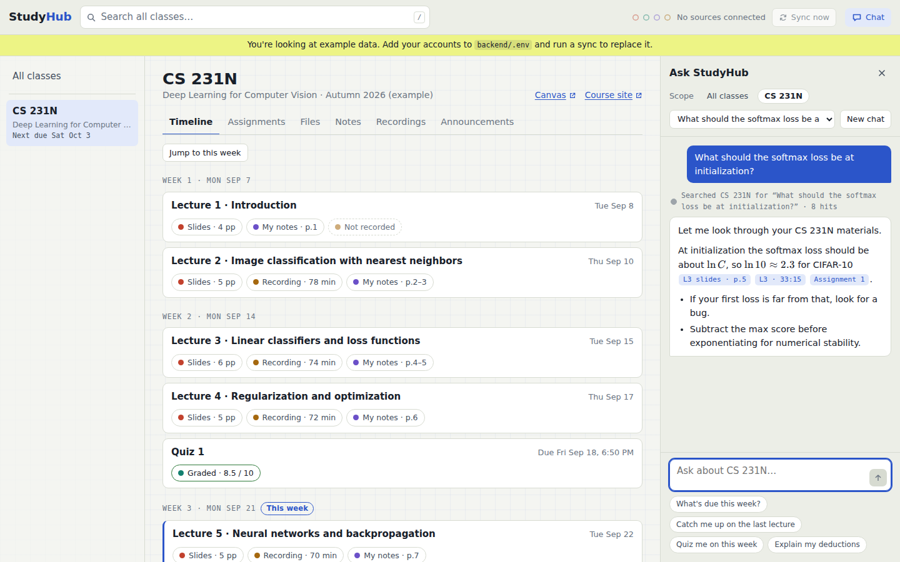

One place to browse everything from your classes, plus a Claude agent that can search and read all of it: Canvas, Gradescope, GoodNotes notes, and Granola lecture recordings.
Use retrieval to find things, and have Claude read whole documents to understand them.
Search finds the right lecture, slide, note page, or graded question. Claude then reads that entire document, since one lecture is only about 15k tokens. Deadlines and grades come from database queries, not search. Everything in your classes together is too big to send with every question. Reasoning below.
Chat no longer needs an API key: it runs through Claude Code on your Max plan, and answered real questions on your Mac on September 24. The code is on the branch claude/class-resources-chat-qcay22, and CI passes on it. There's no pull request yet. An agent working locally can pick it up from docs/HANDOFF.md, and CLAUDE.md points it there automatically.

| Area | Status | What it does |
|---|---|---|
| Canvas | Syncing your 4 courses | REST API with a personal access token: courses, syllabus, modules, files and slides, pages, assignments, announcements. Lectures take their number, date and topic from the slides' title page. |
| Gradescope | Connected | Scores and due dates through gradescopeapi, plus per-question scores, rubric items and grader comments, checked on 12 of your past graded submissions. MATH 115 and STATS 118 have nothing posted yet. |
| GoodNotes | Untested on real data | Reads Auto Backup PDFs from a folder. A notes page joins a lecture by the date written at its top. |
| Granola | Untested on real data | Public API, which needs a Business plan. Keeps its own copy of every transcript. |
| Course websites | Built, added | Added because CS 231N posts slides on its own site. Downloads the linked PDFs and public Google Slides, and dates lectures from the schedule table. |
| Lecture timeline | Built | Rebuilt after every sync from, in order: the imported schedule, recording dates, dated note pages, and "Lecture N" files. studyhub schedule imports the schedule from the syllabus, the course site or a CSV. |
| Search | Built | Keyword search (SQLite FTS5), plus optional semantic search (Voyage, or a local model), with the two result lists merged. |
| Chat agent | Working on your Max plan | Eight read-only tools, streamed answers, and citation chips the server checks against what the tools actually returned. Uses claude-opus-5, either on your Claude plan through Claude Code or on an API key (Settings → Claude). |
| Handwriting transcription | Not run yet | Claude vision, one page at a time, sending only new or changed pages. Needs an API key for now; schedule import does too. |
| French class-page homework | Built | FRENLANG 1's "Week 1, Day 3" pages become assignments due at the start of each class, with a Done box. Chat sees them too. |
| Web app | Built | Timeline, viewer (PDF pages, transcript timestamps, graded feedback), chat, search, sync status, dark mode, phone layout. |
| Setup, auto-sync, CI | Built | make setup. Syncs on its own while running. GitHub Actions runs the tests and build on every push. |
| Settings page | Built | Fill in each source's login in the app, with a Test connection button for each. It writes backend/.env, and only this computer can reach it. |
| Evals | Harness built | studyhub eval asks a set of questions and checks each answer cites the right source. What's missing is about 40 of your real questions. |
make setup on a clean cloneOnly Canvas has an official API that works for a student account. Everything else needs a workaround, and each workaround shapes the design.
| Source | How to get the data | Auth | What we pull | Catches | Today |
|---|---|---|---|---|---|
| Canvas | REST API at /api/v1 |
Personal access token (Account → Settings → New access token) | Courses, syllabus, modules, files and slides, pages, assignments and due dates, announcements, calendar | Instructure has no official MCP server for outside agents. After the April 2026 breach it restricted how tokens can be created, so confirm Stanford still lets students make one. Some CS courses post slides on the course website, not Canvas. | Connected |
| Gradescope | Unofficial Python client gradescopeapi, which logs in and parses pages |
Email and a Gradescope password. SSO accounts set one with "Forgot password". | Courses, assignments, due dates, scores, graded submission PDFs with rubric marks | No official API. It breaks when Gradescope changes its pages. Poll twice a day at most. | Connected |
| GoodNotes | Auto Backup to Google Drive as PDF, mirroring your GoodNotes folders | Google Drive (read-only API scope, or the local Drive for Desktop folder) | One PDF per notebook | No API. The PDF's handwriting text layer is fine for prose and weak on math and diagrams, so pages also go through Claude vision. | No backups found |
| Granola | Public API (public-api.granola.ai/v1, Business and Enterprise) or the official MCP server (mcp.granola.ai/mcp, all plans) |
API key (grn_…) or OAuth |
Lecture notes, AI summary, full transcript, folder | On the free Basic plan, MCP only sees the last 30 days and can't pull raw transcripts. StudyHub has to keep its own copy either way. | Connected 0 lectures |
| Course websites | Read the course's schedule page and the slide PDFs it links | None (public pages) | Slides, schedule, lecture dates | Added while building: CS 231N posts slides on its own site, not Canvas. Private Google Slides are kept as links only. | Added |
Each course is a timeline of lectures. Each lecture gathers its recording, slides, and your notes, so missing pieces are easy to spot. The chat panel stays open next to whatever you're viewing.
Every item is matched to a lecture by date and course schedule. Gaps like "Not recorded" or "No notes" show at a glance.
PDF pages, transcripts with timestamps, Canvas pages, and graded submissions. Every citation chip opens here at the exact page or minute.
Ask across all classes, one class, or just the item on screen ("explain this page"). The trail shows what the agent searched and read.
Due dates from Canvas and Gradescope in one list, with scores and the rubric items you lost points on.
Catch me up on a lecture I missed, quiz me on week 3, build a midterm review, explain my deductions.
Last sync time and errors per source, with a Sync now button. A broken Gradescope login shows up here instead of as silent gaps.
The answer depends on two things: how big the material is, and what kinds of questions you'll ask.
Tokens. Assumes ~140 spoken words per minute. Four classes come to about 2M tokens a quarter, which is more than Claude's 1M-token context, and the total keeps growing every quarter. A single lecture is about 15k tokens, which Claude can read in full with room to spare.
| You ask | Best path | Why plain RAG struggles |
|---|---|---|
| "What's due this week?" or "What's my grade in 231N?" | Database query | Dates, totals, and "all of X" aren't similarity problems. Top-k search returns some assignments, not all of them. |
| "Where did the professor explain dropout?" | Hybrid search, then cite the timestamp | This is the case where search works well. |
| "Explain lecture 7 to me." | Look up the lecture, then read the whole transcript, slides, and notes | Chunks lose the thread of an 80-minute argument. |
| "Why did I lose points on A1 Q2, and where was that covered?" | Gradescope record, then search lectures, then read | The question crosses sources and mixes structured data with text. |
| "Make me a practice midterm." | Lecture summaries first, then read the lectures that matter | It needs everything in scope, and the top 8 chunks won't cover that. |
| Approach | Cost per question | Where it breaks |
|---|---|---|
| Send everything with every question | ~$2.50 (one class) | Four classes don't fit in the context. Even one class is slow and costly. Useful only for a focused study session over a few lectures. |
| Live connectors only (MCP, no local copy) | low tokens, slow | Gradescope and GoodNotes have no API to connect to. Granola's free plan forgets after 30 days. There's no search across sources, and every question waits on several network calls. |
| Classic RAG (top-k chunks into the prompt) | ~$0.05 | Wrong on lists, dates, and whole-lecture questions. Answers lean on fragments. |
| Agent over a synced store: search to find, read whole documents, query tables | ~$0.10–0.40 | More moving parts than classic RAG. This is the recommendation. |
Build retrieval, keep it small, and let the agent decide when to use it.
At about 2M tokens a quarter, SQLite full-text search plus embeddings in the same file is enough. You don't need a vector database service, a reranker, or LangChain. Claude chooses whether to search, read a whole document, or query a table, the same way Claude Code greps and then opens a file.
Use both keyword and vector search. Course vocabulary is exact ("A1 Q2", "batch norm", "ResNet-50"), which favors keywords. Spoken transcripts have transcription errors and paraphrase, which favors embeddings. Before embedding, each chunk gets a short header like CS 231N · Lecture 7 · Oct 14 · transcript · 32:10–35:40. That's a free version of Anthropic's contextual retrieval technique.
Sync jobs copy everything into a local store on a schedule. The agent reads from that store, which is fast, keeps history, and allows search across sources. Live calls are only for "check for anything new."
sync_now to refresh one source before answering.
StudyHub/ ├─ backend/app/ │ ├─ connectors/ canvas.py · gradescope.py · goodnotes.py · granola.py │ ├─ ingest/ pdf_text.py · handwriting.py · transcripts.py · link_lectures.py · index.py │ ├─ agent/ tools.py · prompt.py · chat.py │ ├─ api/ routes.py (REST + SSE chat) │ └─ db/ schema.sql ├─ backend/scripts/check_access.py ├─ web/ Vite + React: Timeline, Viewer, Chat, SyncStatus └─ data/ gitignored: studyhub.db, raw files
Everything becomes Markdown with a stable locator (page, slide, or timestamp) and a link to its lecture. The lecture link is what makes the timeline and cross-source answers work.
updated_at.feedback table.The agent runs one of two ways. On your Claude Max plan, Claude Code runs it through the Claude Agent SDK, with every built-in Claude Code tool, setting and plugin switched off. With an API key, StudyHub runs the loop itself on the Messages API. Either way it has only these tools, and it needs no sandbox, because every tool is a local database or file read.
| Tool | What it returns | Backed by |
|---|---|---|
searchquery, course?, sources?, date range? | Ranked snippets with locators and lecture links | FTS5 + vectors |
readresource_id, pages? / time range? | The full text of a transcript, deck, note, or spec, or a slice of it | Markdown store |
get_lecturecourse, number or date | Transcript, slides, and your notes for one lecture in one call | SQL + store |
list_assignmentscourse?, status?, due_before? | Deadlines, status, scores | SQL |
get_feedbackassignment, question? | Rubric items applied, comments, points lost, page | SQL |
list_announcementscourse?, since? | Recent announcements | SQL |
list_resourcescourse, kind?, week? | The catalog, so the agent can see what exists before reading | SQL |
sync_nowsource, course? | Fresh data from one source before answering | Connectors |
The course map (schedule, lecture titles and one-line summaries, assignment list) is small enough to include with every request. Placing it before the cache breakpoint makes it cost about a tenth of the normal input price after the first question.
Every search hit and read result carries a locator such as 231n/L07/transcript@41:12, 231n/L07/slides#p27, 231n/notes/L07#p3, or 231n/A1/Q2. The agent cites with those. The server keeps only locators a tool actually returned in that turn, and the UI turns them into chips that open the viewer at that spot.
claude-opus-5) with adaptive thinking and streaming.medium for everyday chat and high for exam prep. Tune both against your evals.studyhub.dbcourses id, code, title, term, canvas_id, gradescope_id, granola_folder_id, notes_folder, site_url, ai_policy
lectures id, course_id, number, week, starts_at, title, outline, summary
resources id, course_id, lecture_id?, source, kind, external_id, title, url,
occurred_at, content_hash, raw_path, markdown, synced_at
source: canvas | gradescope | goodnotes | granola
kind: slides | file | page | spec | notes | transcript | submission | announcement
chunks id, resource_id, locator, header, text + chunks_fts (FTS5), embedding
assignments id, course_id, source, external_id, title, due_at, points, status, score, url
feedback id, assignment_id, question, points_lost, rubric_items, comment, page
sync_runs id, source, started_at, finished_at, status, items_changed, error
threads id, scope, title, backend, agent_session_id, created_at
messages id, thread_id, role, text, api_json, tools_json, citations_json, created_at
schedule course_id, number, date, title imported lecture plan; anchors lecture numbers and dates
Estimates at Claude Opus 5 list prices ($5 input and $25 output per million tokens), for when you use an API key. On your Max plan, chat costs nothing extra and counts against the plan's usage limits instead.
| Item | Unit | Per class, per quarter |
|---|---|---|
| Handwriting transcription (~150 pages) | ~$0.02 / page | ~$3 |
| Lecture outlines and summaries (20 lectures) | ~$0.10 / lecture | ~$2 |
| Embeddings (~500k tokens) | — | under $0.10 |
| Same ingestion through the Batch API | 50% off | ~$2.50 |
| Chat: quick lookup ("what's due") | ~$0.03 | — |
| Chat: typical (search, then read one lecture) | ~$0.20 | — |
| Chat: heavy (practice exam over 6 lectures) | ~$0.60–1.00 | — |
The browser is useful before the agent exists, and the agent is only as good as the index behind it, so they're built in that order.
Start recording lectures in Granola, turn on GoodNotes Auto Backup, and get a Canvas token and a Gradescope password. Then write scripts/check_access.py, which logs in to each source and prints what it sees. Material that isn't captured now can't be recovered later, so this phase matters most.
Done whenthe script lists your courses from Canvas and Gradescope, a notebook PDF from Drive, and a recorded lecture from Granola.
Build the four connectors, the SQLite schema, the raw file store, and the web app's course timeline, assignments tab, viewer, and sync status.
Done wheneverything in CS 231N shows up in the browser within an hour of appearing upstream.
Add PDF text extraction, handwriting transcription, transcript windows, lecture matching, lecture summaries, and the FTS5 and vector indexes. Search in the top bar works without the agent.
Done whensearching for a term you only wrote by hand finds the right notes page.
Add the tools, the course-map prompt with caching, streaming, citation chips that open the viewer, saved threads, and the scope switch.
Done when30 real questions from your classes get correct answers with working citations.
Add the quick actions (catch me up, quiz me, explain my deductions, midterm review). Keep an eval set of about 40 of your real questions with the sources that should be cited, and rerun it whenever retrieval or prompts change. Optionally, expose the same tools as an MCP server so Claude Code and the Claude apps can use StudyHub too.
Done wheneval scores are tracked and retrieval misses are rare enough that you stop noticing them.
Transcripts are the richest lecture source, and Granola's docs say raw transcript access needs a paid plan. On the free plan you get AI notes only, and only for 30 days.
SuggestedDecide before you start recording. On the free plan, sync at least weekly so nothing ages out.
Some instructors don't allow students to record lectures, or require that you ask first.
SuggestedCheck each syllabus, or ask, before recording a course.
Hosting gives you phone access. It also means a login system, stored secrets, and a server holding your grades.
SuggestedLocal first. Revisit after Phase 3.
The agent can read each syllabus's AI policy and switch to hints and concept explanations on open assignments.
SuggestedMake it a per-course setting, filled in from the syllabus.
This plan assumes Claude Opus 5 everywhere. A smaller model could transcribe pages for less money, at some risk to accuracy on messy math.
SuggestedStart with Opus 5 through the Batch API, then decide using Phase 2 numbers.
Claude with your existing Granola and Google Drive connectors can already answer questions about recorded lectures and backed-up notes. It can't see Gradescope, keep history, or give you the browser.
SuggestedUse it as a stopgap while you build.
| Risk | Mitigation |
|---|---|
| The Gradescope client breaks | It's an isolated connector that fails visibly in sync status. Everything else keeps working. Pin the library version. |
| A Canvas token grants full account access | Store it in the macOS Keychain or a gitignored .env, give it an expiry date, and only ever call read endpoints. |
| Math is mis-transcribed from handwriting | The viewer always shows the original page next to the transcription, and citations point to the page. |
| The agent makes up a citation | The server drops any locator that no tool returned in that turn. |
| Course content contains instructions (prompt injection) | The agent has no tools that write, post, or send, so there's nothing harmful for injected text to trigger. |
| On your Max plan, the agent reaches Claude Code's own tools (shell, files, web) | They're switched off, along with your Claude Code settings, hooks and plugins, and each answer stops if Claude Code offers anything but StudyHub's tools. Tests check both. |
| Anthropic changes the rules for using a plan outside its apps | The policy changed three times in 2026. The API-key path stays built; switch in Settings → Claude. |
| Lectures go unrecorded | The timeline shows the gap, and the agent says it has no recording for that lecture instead of guessing. |